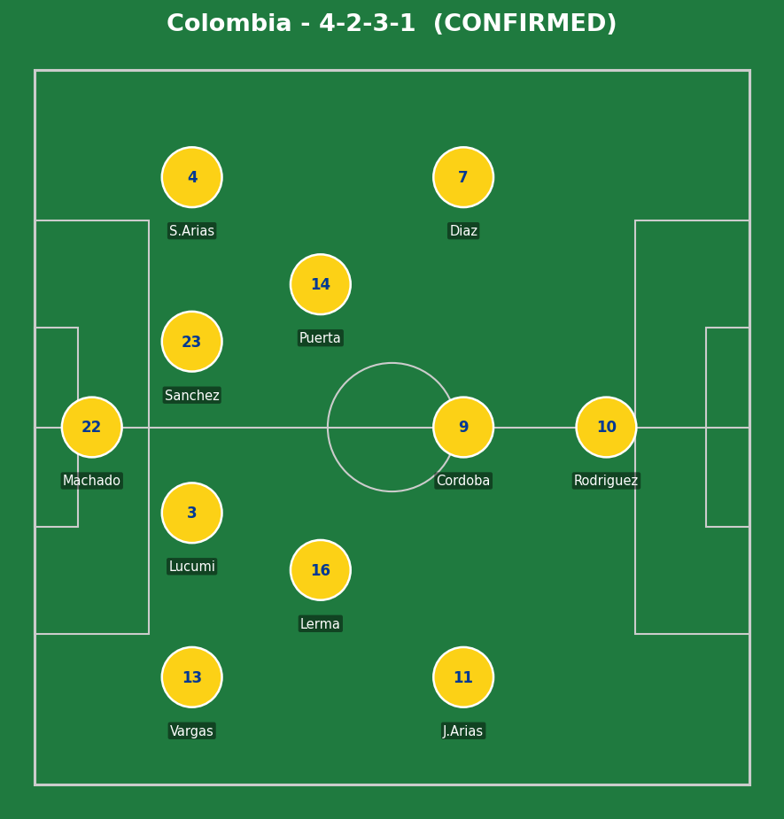
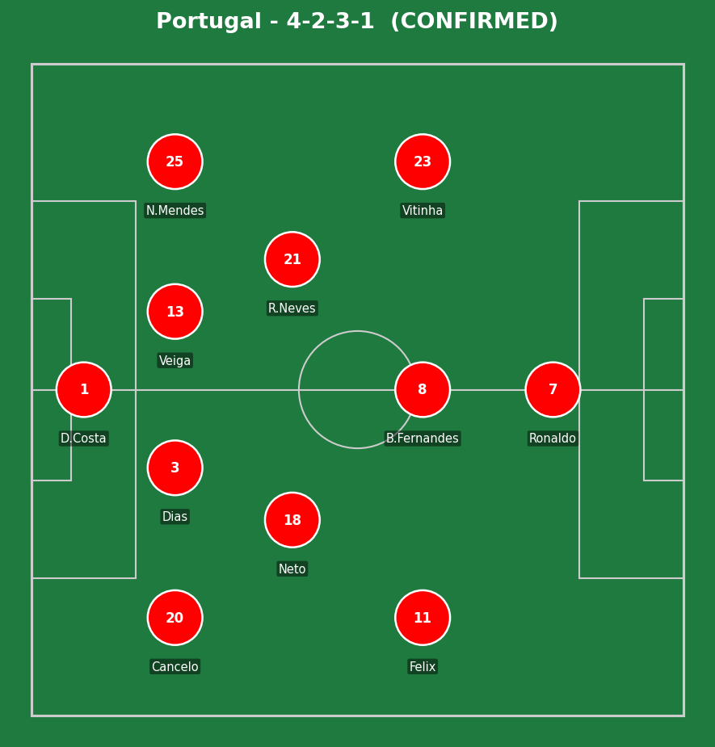
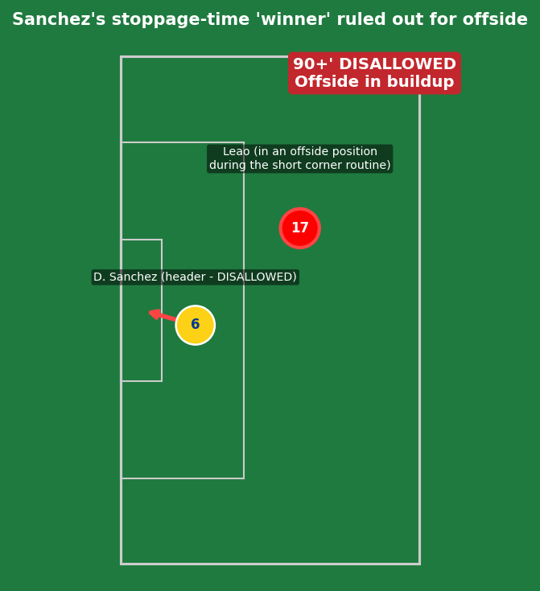
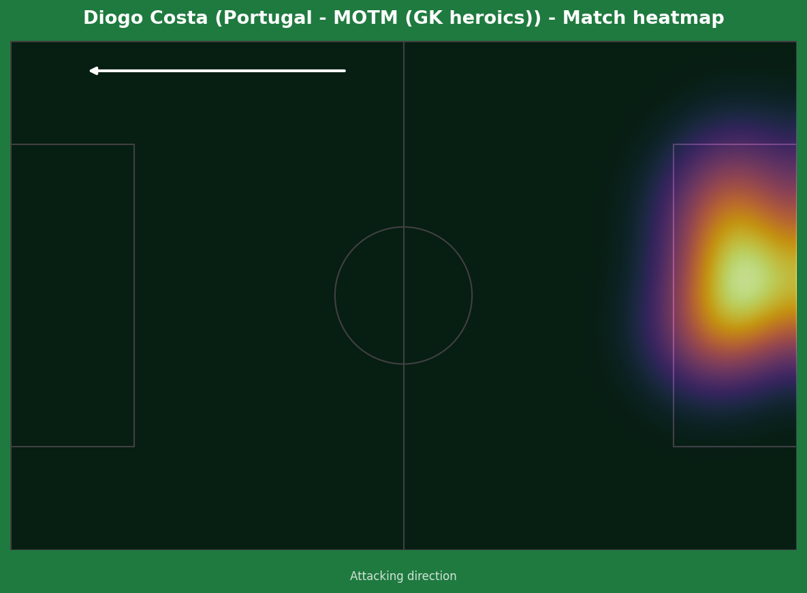
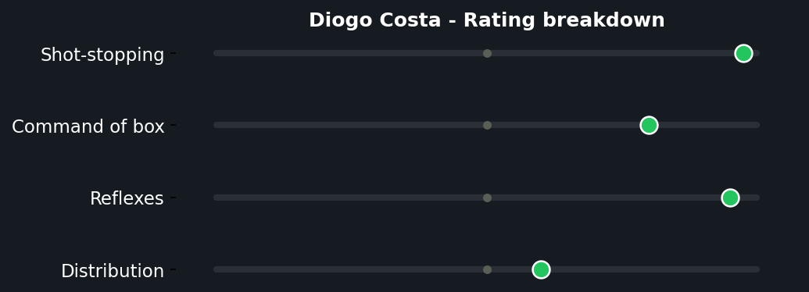
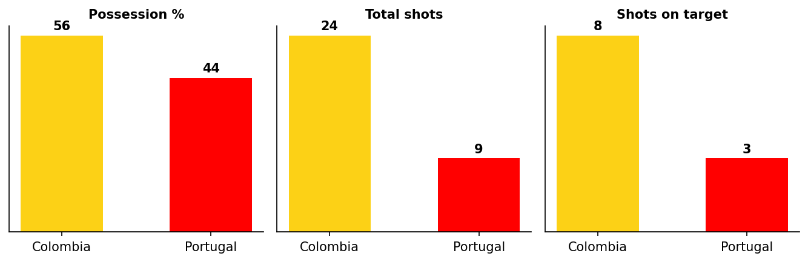

A genuinely end-to-end, high-chance affair that simply refused to produce a goal. Colombia dominated the chance count - 24 shots across the 90 minutes - but found Diogo Costa in inspired form, denying Jhon Cordoba's powerful effort and standing tall throughout. Gustavo Puerta also fired over from long range. Portugal's best moment came from Bruno Fernandes, whose curling effort from a quick corner drifted just wide of Camilo Vargas's right post. The closest either side came to breaking the deadlock arrived deep into stoppage time, when Davinson Sanchez headed home from a short corner routine - only for the goal to be chalked off after a VAR review confirmed Rafael Leao was offside earlier in the same phase of play. Colombia's draw was exactly enough: their first-ever World Cup goalless result still secured top spot in Group K, with Portugal through in second.


Colombia (4-2-3-1): Machado; Vargas, Lucumi, Sanchez, S. Arias; Lerma, Puerta; J. Arias, Cordoba, Diaz; Rodriguez (c). Portugal (4-2-3-1): Diogo Costa; Cancelo, Dias, Veiga, N. Mendes; Neto, R. Neves; Felix, B. Fernandes, Vitinha; Ronaldo (c).
Two notable selection calls: Lorenzo dropped both Daniel Munoz and Luis Suarez to the bench, bringing in Cordoba and S. Arias - a more conservative Colombia XI than expected, with Rodriguez operating as a deeper false-9. Martinez went with Felix and R. Neves ahead of Dalot and Bernardo Silva - Neto and Neves forming the double pivot, with Bruno Fernandes given license to roam centrally behind Ronaldo.
This was not the cagey, low-event stalemate the early predictions suggested - Colombia were genuinely the more incisive side for long stretches, with 24 shots reflecting real attacking intent rather than a side simply parking the bus to protect a point. Cordoba's deeper false-9 role created exactly the kind of central penetration the pre-match analysis flagged, repeatedly testing Costa.
Portugal's lower shot count (9) tells its own story - Roberto Martinez's side struggled to consistently break Colombia's structure down, relying more on individual moments (Bruno Fernandes's free-kick effort, Ronaldo's wasted advantage) than sustained combination play. Leao's introduction for Felix after the second hydration break did add fresh energy, but by that point Colombia's intensity had already set the tone for the night.
The key moment of the match was Diogo Costa's collective body of work, not any single save - across 90-plus minutes of being the busier goalkeeper by a wide margin, he was the single biggest reason this finished goalless rather than a routine Colombia win.

The dramatic high point of the match, and a genuine gut-punch for Colombia. From a short corner routine deep into stoppage time, the ball was worked back in and Davinson Sanchez rose to head home - cue real celebrations in Miami, until the assistant referee's flag went up. A lengthy VAR review followed, examining whether Rafael Leao had played Sanchez onside earlier in the same phase of the corner routine. The officials ultimately confirmed the original call: Leao was offside in the buildup, and the goal was correctly disallowed. A heartbreaking way for a match to almost end, even though the result Colombia actually got - a draw - was already enough for top spot regardless.
A genuinely odd moment mid-match - Veiga's poor touch sent a long ball out of play, initially given as a Colombia throw-in or goal-kick, before VAR became involved in reviewing the decision. The confusion resolved itself without a clear missed call either way (goal-kicks aren't the kind of decision VAR can simply overturn), so this is flagged here as a notable quirk of the match rather than a genuine officiating error.


Facing 24 shots from a Colombia side playing with real intent, Costa was the single biggest reason Portugal leave Miami with a point rather than a defeat. His save on Cordoba's powerful effort was the standout moment, but the cumulative weight of a near-constant workload across 90-plus minutes is what makes this performance MOTM-worthy over any single highlight-reel stop. Without him, this is a comfortable Colombia win on the underlying chances created, not a tense, scoreless draw.
Illustrative reconstruction based on known event locations, not raw GPS tracking data.
D. Sanchez - 7.0 (disallowed goal, defensively solid)
Cordoba - 7.5 (constant threat, denied by Costa)
Puerta - 6.5 (one good effort, over the bar)
Rodriguez - 6.5 (orchestrated from a deeper role)
Diogo Costa - 8.5 ⭐ MOTM (6+ saves)
B. Fernandes - 6.5 (best individual effort, just wide)
Ronaldo - 5.5 (quiet, wasted advantage)
Dias - 6.5 (organized under sustained pressure)

A 24-9 shot count in Colombia's favor is a genuinely lopsided number for a goalless draw - a clear sign of how instrumental Diogo Costa was in keeping the scoreline level.
Got right: the draw outcome itself was correctly flagged as a real possibility (32% in the pre-match projection), and Diaz/Cordoba's central role in Colombia's best moments matched the pre-match read on where their threat would come from.
Got wrong: the predicted 1-1 scoreline assumed at least one side would convert - neither did, largely because Diogo Costa's individual performance was a level above what the pre-match data could have reasonably projected. The disallowed Sanchez goal also wasn't and couldn't have been anticipated - genuine late drama that very nearly flipped the entire outcome.
Colombia top Group K and advance to the Round of 32 unbeaten. Portugal finish second, also through, with the draw setting up their next-round opponent.
💬 Reactions & Comments